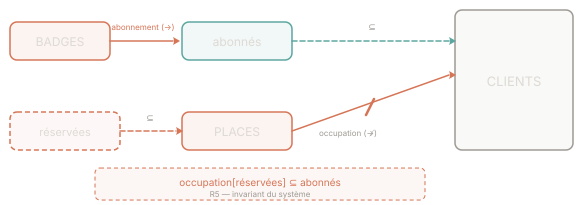

Prérequis : Cours — Types de relations et de fonctions en B-Méthode
On modélise un parking géré par badge. Trois ensembles de base sont donnés :
À partir de ces ensembles, on veut formaliser cinq spécifications R1 à R5 qui décrivent les règles métier du système. Pour chacune, il faut choisir le type de relation ou d'ensemble adéquat et écrire l'expression B correspondante.

Vue d'ensemble du modèle — les tirets indiquent des sous-ensembles ; la barre sur la flèche occupation marque la fonction partielle (↛).
En B-Méthode, on distingue plusieurs types de relations entre A et B :
| Notation | Nom | Contrainte |
|---|---|---|
A → B | Fonction totale | Chaque a ∈ A a exactement une image dans B |
A ↛ B | Fonction partielle | Chaque a ∈ A a au plus une image dans B (peut en avoir aucune) |
A ↣ B | Injection totale | Fonction totale + deux éléments distincts de A ont des images distinctes |
S ⊆ T | Sous-ensemble | Tous les éléments de S appartiennent à T |
Choisir le bon type, c'est exprimer exactement ce que la spécification garantit — ni plus, ni moins.
Comment passer du langage naturel à l'expression B ?
Règle pratique
Commencez toujours par déclarer les types simples (R1, R3) avant d'écrire les contraintes qui les lient (R5). Un invariant ne peut contraindre que des variables déjà déclarées.
Exemple guidé
Spécification : « Chaque enseignant est un membre du personnel ».
Spécification : « Chaque carte associe un étudiant à exactement un vestiaire ».
Analogie
Sous-ensemble vs. fonction : "les abonnés sont des clients" décrit une appartenance de catégorie → ⊆. "Chaque badge est attribué à un abonné" décrit une association individualisée → fonction.
Une ⊆ dit "qui fait partie de qui" ; une fonction dit "qui pointe vers qui".
Donner la représentation formelle B des spécifications suivantes :
Pour chaque réponse, précisez le nom de la variable introduite et son type B.
R1 et R3 expriment qu'une certaine collection est une partie d'un ensemble de base. Quel opérateur B traduit "est un sous-ensemble de" ?
R2 exprime une association : à chaque badge correspond un abonné. Quel type de relation garantit qu'un élément a exactement une image ?
R1 : les abonnés sont des clients particuliers
On introduit la variable abonnés.
abonnés ⊆ CLIENTS
abonnés est un sous-ensemble de CLIENTS : tout abonné est un client, mais tous les clients ne sont pas nécessairement abonnés.
R2 : chaque badge appartient à un unique abonné
On introduit la variable abonnement.
abonnement ∈ BADGES → abonnés
"Chaque badge" → domaine total (tout badge a une image). "Unique abonné" → fonctionnel (au plus une image par élément du domaine). Combinés : fonction totale BADGES → abonnés.
Pourquoi pas ↣ (injection) ?
La spécification dit que chaque badge appartient à un abonné — elle ne dit pas que deux badges distincts ne peuvent pas appartenir au même abonné. Un client abonné pourrait avoir plusieurs badges (badge de voiture et de moto, par exemple). Si la spécification avait dit "chaque abonné possède au plus un badge", il faudrait alors une injection.
R3 : certaines places sont réservées
On introduit la variable réservées.
réservées ⊆ PLACES
"Certaines" signifie une partie des places — sous-ensemble de PLACES, pas nécessairement toutes.
Donner la représentation formelle B des spécifications suivantes :
Pour R5, la réponse doit exprimer une contrainte reliant occupation, réservées et abonnés (variables définies en Q1).
R4 : une place peut être libre ou occupée par un client. Quel type de fonction traduit "au plus un client par place" avec la possibilité qu'une place soit vide ?
R5 : exprimer que tous les clients occupant une place réservée sont des abonnés. Pensez à l'image de l'ensemble réservées par la relation occupation : occupation[réservées].
R4 : plan d'occupation des places
On introduit la variable occupation.
occupation ∈ PLACES ↛ CLIENTS
Fonction partielle : chaque place est soit libre (pas d'image), soit occupée par exactement un client (au plus une image). dom(occupation) est l'ensemble des places effectivement occupées à l'instant t.
Lecture de occupation ∈ PLACES ↛ CLIENTS
La flèche barrée ↛ signifie "fonction partielle de … vers …". Concrètement :
À chaque instant, dom(occupation) ⊆ PLACES représente l'ensemble des places occupées.
R5 : respect des réservations
occupation[réservées] ⊆ abonnés
occupation[réservées] est l'image de réservées par occupation : c'est l'ensemble de tous les clients qui ont garé leur véhicule dans une place réservée. La contrainte dit que cet ensemble doit être entièrement inclus dans abonnés.
Décoder R5 étape par étape
occupation[réservées] = { c ∈ CLIENTS | ∃ p ∈ réservées · (p, c) ∈ occupation }
Autrement dit : "l'ensemble des clients qui occupent au moins une place réservée".
Imposer occupation[réservées] ⊆ abonnés, c'est dire : si un client est garé dans une place réservée, alors c'est nécessairement un abonné. Un non-abonné ne peut pas occuper une place réservée.
| Spéc. | Variable | Expression B | Type |
|---|---|---|---|
| R1 | abonnés | abonnés ⊆ CLIENTS | Sous-ensemble |
| R2 | abonnement | abonnement ∈ BADGES → abonnés | Fonction totale |
| R3 | réservées | réservées ⊆ PLACES | Sous-ensemble |
| R4 | occupation | occupation ∈ PLACES ↛ CLIENTS | Fonction partielle |
| R5 | — | occupation[réservées] ⊆ abonnés | Contrainte invariant |
entrer(b, p) permettant à un porteur de badge b d'entrer et d'occuper la place p, avec sa précondition et sa substitution.